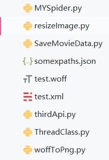

具体代码如下
import requests
import fake_useragent
import re
import os
from woffToPng import woff_to_image
from resizeImage import resize_img
from lxml import etree
from html import unescape
from ThreadClass import SpiderThread
from SaveMovieData import SaveInfo
from pyquery import PyQuery as pq
from pprint import pprint
import json
import time
# 用协程实现有点苦难，暂时试一试多线程
# 存储urls
film_urls = []
def verify_img(img_dir):
api_url = "http://127.0.0.1:6000/b"
img_to_num = {}
for file in os.listdir(img_dir):
file_name = os.path.join(img_dir, file)
# 重新构建图片大小
resize_img(file_name, file_name)
files = {"image_file": ("image_file", open(file_name, "rb"), "application")}
r = requests.post(url=api_url, files=files, timeout=None)
if r.status_code == 200:
# 获得图片的名字，即数字所对应的unicode编码
num_id = os.path.splitext(file)[0][3:]
img_to_num[str(int(num_id, 16))] = r.json().get("value")
return img_to_num
def find_certain_part(html, xpath_format):
try:
return html.xpath(xpath_format)[0]
except Exception:
return "null"
def parse_data_by_lxml(source_code, img_to_num, saver):
html = etree.HTML(source_code)
xpaths = json.loads(open("somexpaths.json", "r").read())
movie_name = find_certain_part(html, xpaths.get("movie_name"))
movie_ename = find_certain_part(html, xpaths.get("movie_ename"))
movie_classes = find_certain_part(html, xpaths.get("movie_classes")).strip()
movie_length = find_certain_part(html, xpaths.get("movie_length")).strip()
movie_showtime = find_certain_part(html, xpaths.get("movie_showtime")).strip()
text_pattern = re.compile('.*?class="stonefont">(.*?)</span>')
data_to_be_replace = []
movie_score = find_certain_part(html, xpaths.get("movie_score"))
movie_score_num = find_certain_part(html, xpaths.get("movie_score_num"))
if movie_score != "null":
movie_score = text_pattern.search(etree.tostring(movie_score).decode("utf8")).group(1)
if movie_score_num != "null":
movie_score_num = text_pattern.search(etree.tostring(movie_score_num).decode("utf8")).group(1)
data_to_be_replace.append(movie_score)
data_to_be_replace.append(movie_score_num)
movie_box = find_certain_part(html, xpaths.get("movie_box"))
if movie_box != "null":
movie_box = text_pattern.search(etree.tostring(movie_box).decode("utf8")).group(1)
movie_box_unit = find_certain_part(html, xpaths.get("movie_box_unit"))
data_to_be_replace.append(movie_box)
# 检查是否是字符串
for item in data_to_be_replace:
assert isinstance(item, str)
# 将 unicode 编码的字符串转化为数字
for key, value in img_to_num.items():
new_key = f"&#{key};"
for i in range(len(data_to_be_replace)):
if data_to_be_replace[i] == "null":
continue
if new_key in data_to_be_replace[i]:
data_to_be_replace[i] = data_to_be_replace[i].replace(new_key, value)
movie_score, movie_score_num, movie_box = [unescape(item) for item in data_to_be_replace]
# 没有评分的当作0
if movie_score == "null":
movie_score = "0"
if movie_box != "null":
movie_box = movie_box + movie_box_unit.strip()
movie_brief_info = find_certain_part(html, xpaths.get("movie_brief_info"))
assert(isinstance(movie_brief_info, str))
# 这里的实现逻辑有一点问题，因为只是默认第一个是导演
movie_director, *movie_actors = [item.strip() for item in html.xpath("//body//div[@id='app']//div//div//div//div[@class='tab-content-container']//div//div[@class='mod-content']//div//div//ul//li//div//a/text()")]
movie_actors = "，".join(movie_actors)
movie_comments = {}
try:
names = html.xpath("//body//div[@id='app']//div//div//div//div//div[@class='module']//div[@class='mod-content']//div[@class='comment-list-container']//ul//li//div//div[@class='user']//span[@class='name']/text()")
comments = html.xpath("//body//div[@id='app']//div//div//div//div//div[@class='module']//div[@class='mod-content']//div[@class='comment-list-container']//ul//li//div[@class='main']//div[@class='comment-content']/text()")
assert(len(names) == len(comments))
for name, comment in zip(names, comments):
movie_comments[name] = comment
except Exception:
pass
save_id = saver.insert_dict({
"名称": movie_name,
"别名": movie_ename,
"类别": movie_classes,
"时长": movie_length,
"上映时间": movie_showtime,
"评分": float(movie_score),
"评分人数": movie_score_num,
"票房": movie_box,
"简介": movie_brief_info,
"导演": movie_director,
"演员": movie_actors,
"热门评论": movie_comments
})
print(f"{save_id} 保存成功")
# 爬取源码，在获得源码之后处理字体文件，处理完字体文件之后进行替换
def get_one_film(url, ua, film_id, saver):
headers = {
"User-Agent": ua,
"Host": "maoyan.com"
}
r = requests.get(url=url, headers=headers)
if r.status_code == 200:
source_code = r.text
font_pattern = re.compile("url\(\'(.*?\.woff)\'\)")
font_url = "http:" + font_pattern.search(r.text).group(1).strip()
del headers["Host"]
res = requests.get(url=font_url, headers=headers)
# 下载字体并进行识别对应
if res.status_code == 200:
if os.path.exists(film_id):
os.system(f"rmdir /s /q {film_id}")
os.makedirs(film_id)
woff_path = os.path.join(film_id, "temp.woff")
img_dir = os.path.join(film_id, "images")
os.makedirs(img_dir)
with open(woff_path, "wb") as f:
f.write(res.content)
woff_to_image(woff_path, img_dir)
# 以后试着用协程实现汉字识别
# 先直接识别
# 用字典存储，{"img_id": "img_num"}
img_to_num = verify_img(img_dir)
# 删除所创建的文件
os.system(f"rmdir /s /q {film_id}")
# 对所获得的数据和可以替换的信息进行进一步的处理
parse_data_by_lxml(source_code, img_to_num, saver)
def get_urls(url, ua, showType, offset):
base_url = "https://maoyan.com"
headers = {
"User-Agent": ua,
"Host": "maoyan.com"
}
params = {
"showType": showType,
"offset": offset
}
urls = []
r = requests.get(url=url, headers=headers, params=params)
if r.status_code == 200:
doc = pq(r.text)
for re_url in doc("#app div div[class='movies-list'] dl dd div[class='movie-item'] a[target='_blank']").items():
urls.append(base_url + re_url.attr("href"))
film_urls.extend(urls)
print(f"当前捕获url{len(film_urls)}个")
if __name__ == "__main__":
# 测试
ua = fake_useragent.UserAgent()
tasks_one = []
try:
for i in range(68):
tasks_one.append(SpiderThread(get_urls, args=("https://maoyan.com/films", ua.random, "3", str(30*i))))
for task in tasks_one:
task.start()
for task in tasks_one:
task.join()
except Exception as e:
print(e.args)
saver = SaveInfo()
film_ids = [url.split("/")[-1] for url in film_urls]
print(f"捕获电影url共{len(film_urls)}条")
tasks_two = []
count = 0
try:
for film_url, film_id in zip(film_urls, film_ids):
tasks_two.append(SpiderThread(get_one_film, args=(film_url, ua.random, film_id, saver)))
for task in tasks_two:
task.start()
count += 1
if count % 4 == 0:
time.sleep(5)
for task in tasks_two:
task.join()
except Exception as e:
print(e.args)
print("抓取完毕")
from PIL import Image
import os
def resize_img(img_path, write_path):
crop_size = (120, 200)
img = Image.open(img_path)
new_img = img.resize(crop_size, Image.ANTIALIAS)
new_img.save(write_path, quality=100)
if __name__ == "__main__":
for root, dirs, files in os.walk("verify_images"):
for file in files:
img_path = os.path.join(root, file)
write_path = os.path.join("resized_images", file)
resize_img(img_path, write_path)import pymongo
class SaveInfo:
def __init__(self, host="localhost", port=27017, db="MovieSpider",
collection="maoyan"):
self._client = pymongo.MongoClient(host=host, port=port)
self._db = self._client[db]
self._collection = self._db[collection]
def insert_dict(self, data: dict):
result = self._collection.insert_one(data)
return result.inserted_idfrom __future__ import print_function, division, absolute_import
from fontTools.ttLib import TTFont
from fontTools.pens.basePen import BasePen
from reportlab.graphics.shapes import Path
from reportlab.lib import colors
from reportlab.graphics import renderPM
from reportlab.graphics.shapes import Group, Drawing
class ReportLabPen(BasePen):
"""A pen for drawing onto a reportlab.graphics.shapes.Path object."""
def __init__(self, glyphSet, path=None):
BasePen.__init__(self, glyphSet)
if path is None:
path = Path()
self.path = path
def _moveTo(self, p):
(x, y) = p
self.path.moveTo(x, y)
def _lineTo(self, p):
(x, y) = p
self.path.lineTo(x, y)
def _curveToOne(self, p1, p2, p3):
(x1, y1) = p1
(x2, y2) = p2
(x3, y3) = p3
self.path.curveTo(x1, y1, x2, y2, x3, y3)
def _closePath(self):
self.path.closePath()
def woff_to_image(fontName, imagePath, fmt="png"):
font = TTFont(fontName)
gs = font.getGlyphSet()
glyphNames = font.getGlyphNames()
for i in glyphNames:
if i == 'x' or i == "glyph00000": # 跳过'.notdef', '.null'
continue
g = gs[i]
pen = ReportLabPen(gs, Path(fillColor=colors.black, strokeWidth=5))
g.draw(pen)
w, h = 600, 1000
g = Group(pen.path)
g.translate(0, 200)
d = Drawing(w, h)
d.add(g)
imageFile = imagePath + "/" + i + ".png"
renderPM.drawToFile(d, imageFile, fmt)
import threading
class SpiderThread(threading.Thread):
def __init__(self, func, args=()):
super().__init__()
self.func = func
self.args = args
def run(self) -> None:
self.result = self.func(*self.args)
# 相当于没有多线程
# def get_result(self):
# threading.Thread.join(self)
# try:
# return self.result
# except Exception as e:
# print(e.args)
# return None
{
"movie_name": "//body//div[@class='banner']//div//div[@class='movie-brief-container']//h3/text()",
"movie_ename": "//body//div[@class='banner']//div//div[@class='movie-brief-container']//div/text()",
"movie_classes": "//body//div[@class='banner']//div//div[@class='movie-brief-container']//ul//li[1]/text()",
"movie_length": "//body//div[@class='banner']//div//div[@class='movie-brief-container']//ul//li[2]/text()",
"movie_showtime": "//body//div[@class='banner']//div//div[@class='movie-brief-container']//ul//li[3]/text()",
"movie_score": "//body//div[@class='banner']//div//div[@class='movie-stats-container']//div//span[@class='index-left info-num ']//span",
"movie_score_num": "//body//div[@class='banner']//div//div[@class='movie-stats-container']//div//span[@class='score-num']//span",
"movie_box": "//body//div[@class='wrapper clearfix']//div//div//div//div[@class='movie-index-content box']//span[@class='stonefont']",
"movie_box_unit": "//body//div[@class='wrapper clearfix']//div//div//div//div[@class='movie-index-content box']//span[@class='unit']/text()",
"movie_brief_info": "//body//div[@class='container']//div//div//div//div[@class='tab-content-container']//div//div//div[@class='mod-content']//span[@class='dra']/text()",
"movie_director_and_actress": "//body//div[@id='app']//div//div//div//div[@class='tab-content-container']//div//div[@class='mod-content']//div//div//ul//li//div//a/text()",
"commenter_names": "//body//div[@id='app']//div//div//div//div//div[@class='module']//div[@class='mod-content']//div[@class='comment-list-container']//ul//li//div//div[@class='user']//span[@class='name']/text()",
"commenter_comment": "//body//div[@id='app']//div//div//div//div//div[@class='module']//div[@class='mod-content']//div[@class='comment-list-container']//ul//li//div[@class='main']//div[@class='comment-content']/text()"
}